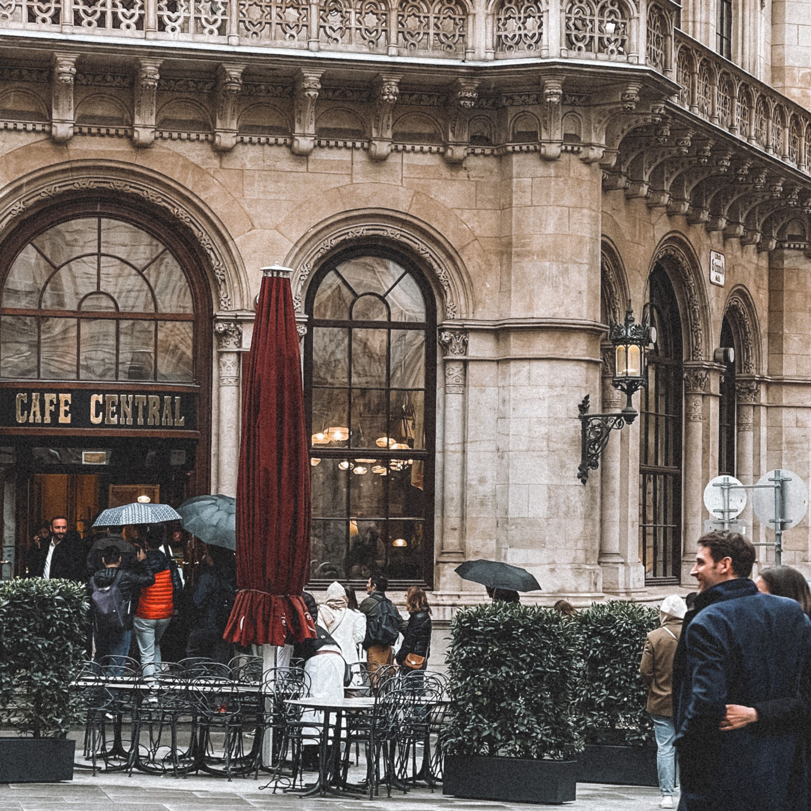
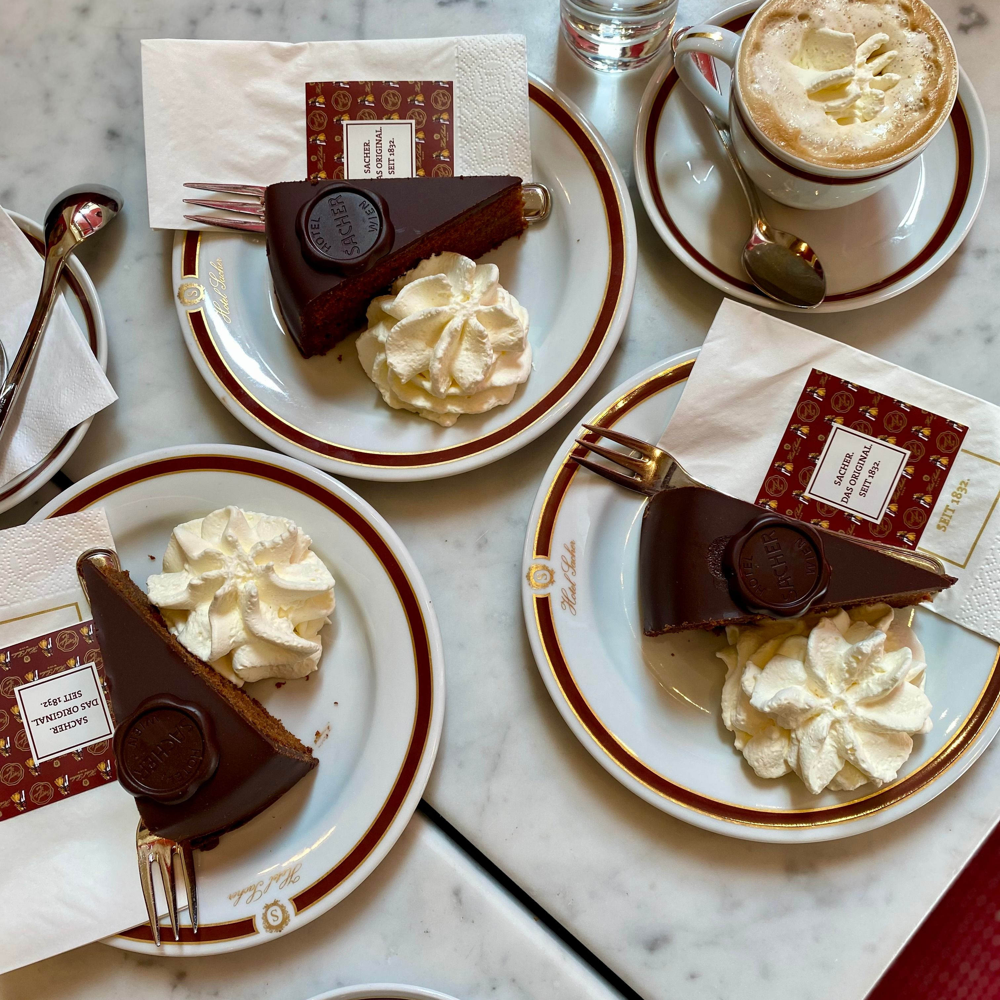
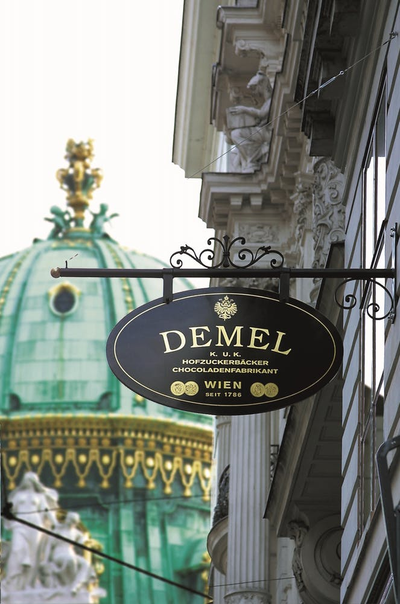
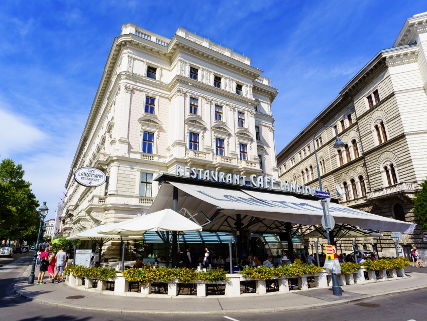
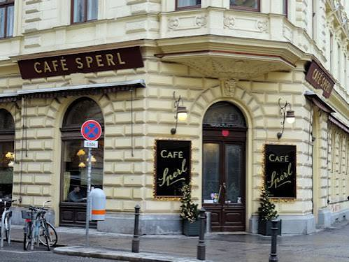
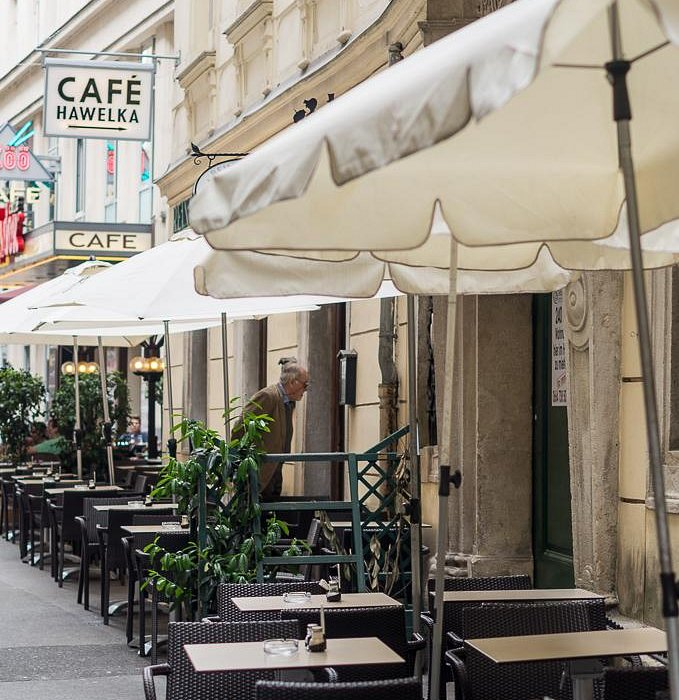
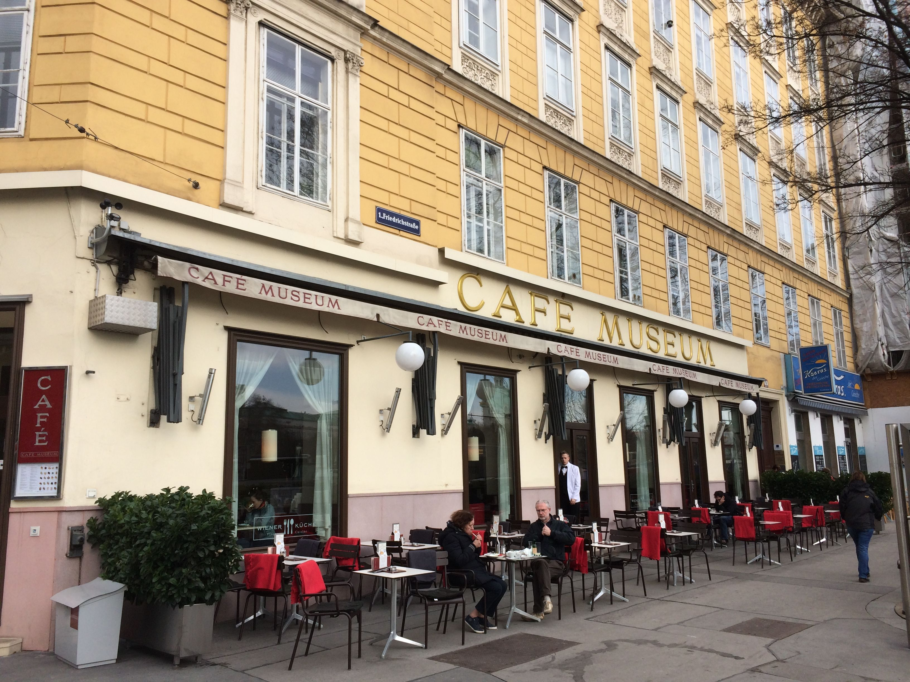
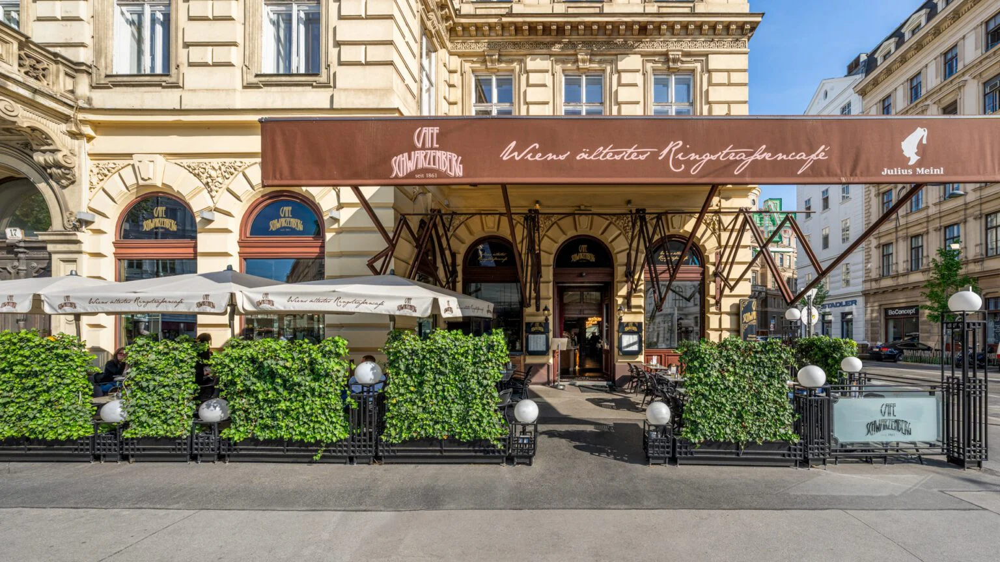
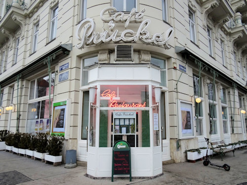
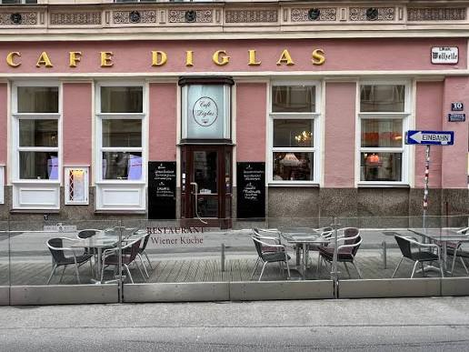

Café Central is perhaps Vienna's most iconic grand café, located inside the magnificent Palais Ferstel.
Features stunning high vaulted ceilings, marble columns, and a rich literary history where historic figures like Peter Altenberg and Leon Trotsky once gathered.

Café Sacher sits right behind the Vienna State Opera and is world-renowned as the birthplace of the original Sachertorte.
Offers an opulent, red-velvet interior steeped in 19th-century imperial luxury.

Demel Vienna cafe is a legendary former imperial and royal court confectionery operating since 1786.
Showcases an exquisite historic storefront, glass-walled display bakeries where you can watch confectioners work, and ornate period salons upstairs.

Café Landtmann has been a political and cultural institution right next to the Burgtheater and City Hall since 1873.
Boasts elegant wood-paneled walls, spacious leather booths, and a prominent outdoor terrace facing the grand Ringstraße boulevard.

Café Sperl opened in 1880 and retains its authentic Belle Époque charm with golden mirrors, marble-topped tables, and old billiard tables.
Offers a much more relaxed, neighborhood-focused atmosphere compared to the bustling inner-city tourist spots.

Café Hawelka is a bohemian, delightfully weathered artistic hub that has been run by the same family since 1945.
Known for its dim, smoke-tinged nostalgia, vintage furniture, and walls covered in artworks left by past patrons.

Café Museum originally opened in 1899 and was a primary gathering spot for Vienna's modernist artists and writers, including Gustav Klimt and Egon Schiele.
Features a clean, elegant design aesthetic reflecting early 20th-century interior architecture.

Café Schwarzenberg is one of the oldest cafes along the Ringstraße, operating since 1861.
Combines classic red leather seating, crystal chandeliers, and occasional weekend piano performances.

Café Prückel overlooks the MAK museum on the edge of the Ringstraße.
Distinctly preserves a retro 1950s interior design style with geometric light fixtures and pastel banquettes.

Café Diglas (Wollzeile 10, 1010 Wien) traces its coffeehouse lineage back centuries and sits tucked away in Vienna's historic Old Town.
Known for its warm, welcoming ambiance, beautiful pastry display cases filled with traditional cakes, and occasional live piano music in the evenings.